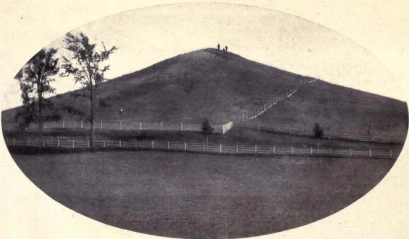

The angel was named Nephi, then Moroni
ContestedLDS scholars have a real answer here. Say so before your friend does.
Who the angel was
Every Latter-day Saint knows him as Moroni — the last Nephite, who buried the plates and returned as an angel to reveal them.
What the 1842 account says
Joseph Smith's official history, published in the Times and Seasons in April 1842 under his own editorship, names the angel Nephi. So does the Millennial Star the same year, the first edition of the Pearl of Great Price in 1851, and Lucy Mack Smith's 1853 history.
Their answer, at full strength
FAIR and church historians call it a copying slip. They say clerks introduced it while compiling the 1838-39 history.
And they point to earlier sources that already say Moroni — Oliver Cowdery's letters from 1835.
How strong is this argument?
Genuinely arguable. A clerical error is entirely possible.
What makes it worth knowing is that the error survived into published scripture and stood for years.
What to say
"Have you seen the 1842 Times and Seasons? It names the angel Nephi."


How they answer this — at its strongest
It was a clerk's slip, and sources from 1835 already name the angel Moroni.
FAIR and church historians call the 'Nephi' reading a slip by a clerk or an editor. It came in when clerks put the history together in 1838 and 1839.
Sources before 1842 already name the messenger Moroni. Oliver Cowdery's 1835 letters in the Messenger and Advocate do. So does D&C 27:5, also from 1835. So Moroni comes first in the record.
Joseph Smith did not read the proofs of every instalment of the serialised history. And the church fixed the name to match the earlier, better-attested one. Nothing was covered up.
The verdict
Arguable: a slip is likely, but that name stood in print from 1842 to 1853.
The print history is undisputed. It comes from the sources themselves. 'Nephi' stood in print from 1842 to 1853, and was later changed.
Their point that 1835 sources name Moroni first is also solid. That makes a clerk's slip quite likely.
What is left unexplained is why the slip ran on uncorrected through several official printings. It stood while Smith was alive, and after.
Sources
- Joseph Smith Papers, History 1838–1856 vol. A-1 (manuscript showing 'Nephi')
- MormonThink: Did Joseph Smith see Nephi or Moroni?
- FAIR: Moroni's visit — Nephi or Moroni